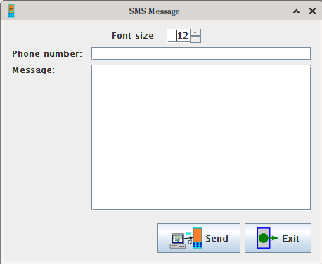

JYMAG - Tabs with phone's files and dialing numbers
These tabs display the files in the phone and allow downloading, uploading and deleting the elements.
In each tab there are four buttons:
- "Get list" - use this to get the list from the phone. The elements listed are the ones
applicable for the current tab. You can get all the lists, they don't overwrite
each other.
- "Download selected" (if available) - this button will present you with a window for you to select
a directory where the elements selected in the table should be downloaded to.
The only exception is the SMS tab, where this button opens new windows with the
messages that you have selected to view.
- "Upload" (if available) - this button will present you with a window for you to select
a file to upload to the phone (the alarms' and SMS messages' tabs are exceptions).
The type of the files shown on the list is
determined by the current tab. Alternatively, you can drag&drop files on the
table (except the alarms and SMS messages).
- "Delete selected" (if available) - use this to delete the elements selected in the table
from the phone.
The tabs with alarms and SMS messages are exceptional. On the alarms' tab the buttons have
the following functionality:
- "Get list" - use this to get the list of the alarms from the phone. The list has four columns:
- "Alarm number" - the alarm's identification in the phone
- "Alarm date" - the date on which the alarm will work (DD/MM/YY format)
- "Alarm time" - the time of day at which the alarm will work (HH:MM:SS format)
- "Alarm days" - the days of the week on which the alarm will work
(any number of digits 1 to 7, separated by commas,
1 is Monday, 0 means all days)
You can edit the elements in the table (by double-clicking), but keep the format,
otherwise something may break.
- "Download selected" is disabled, because you can't download an alarm from the phone.
- "Update selected" - this button will cause the selected alarms to be updated in the phone
(usually after updating them in the table).
- "Delete selected" will cause the information about the selected alarms to be removed
from the phone. This will not cause the number of rows to change, because the number
of alarms is constant (even if they're not used).
On the SMS tab the buttons have the following functionality:
- "Get list" - use this to get the list of the SMS messages from the phone. The list has five columns:
- "ID" - the phone identification number of the given message
- "Status" - the status of the message.
REC means received,
STO means stored, UNSENT means not sent
- "Phone number" - the phone number of the sender of the given received message
- "Date/time" - the date and time the message was received
- "Message" - the body of the message
- "Download selected" will cause new windows to show up. These windows will allow you to read
the whole message easily.
- "Upload" - this button will cause a new window to show up where you can enter the recipient's
number and the message body and send the message (see below).
- "Delete selected" will cause the messages currently selected in the table to be deleted
from the phone.
The window for sending SMS messages looks like this:

- Enter the recipient's phone number
- Enter the body of the message
- Press "Send" to send the message
- Press "Exit" to close the window
- Use the font size spinner to adjust the font size of this window
On the dialing tab the following elements are present:
- number dialing/manual command radio buttons - use them to either automatically
create the command that dials the given number or to provide the dialing command manually
- digit buttons - use them to enter the number you wish to dial (number dialing only)
- voice call/data call radio buttons - use them to choose the transmission type (number dialing only)
- tone dial/pulse dial/automatic method selection radio buttons - use them to choose the
dialing method (number dialing only)
- the "Dial" button - this button will cause the selected number to be dialied (number dialing)
or the manual command to be sent to the device (manual dialing command)
- the "Hang up" button - this button will cause any current connections to be stopped
- the "Answer call" button - this button will cause answering any incoming connection
- the "Volume up" and "Volume down" buttons - allow changing the loudspeaker volume
{kind=link}
{kind=link}
{kind=link}
{kind=link}
{kind=link}
{kind=link}
{kind=link}
{kind=link}
{kind=link}
{kind=link}